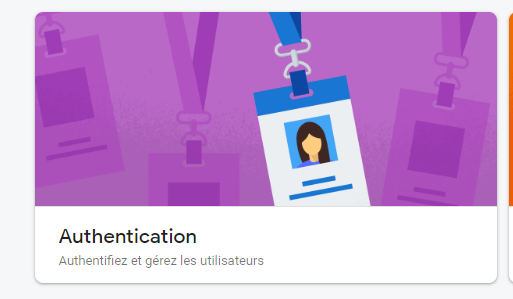
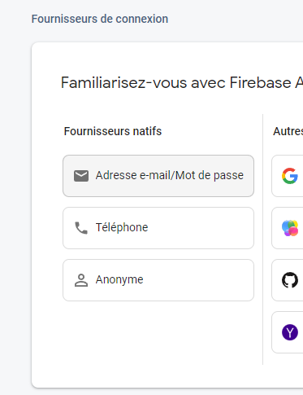
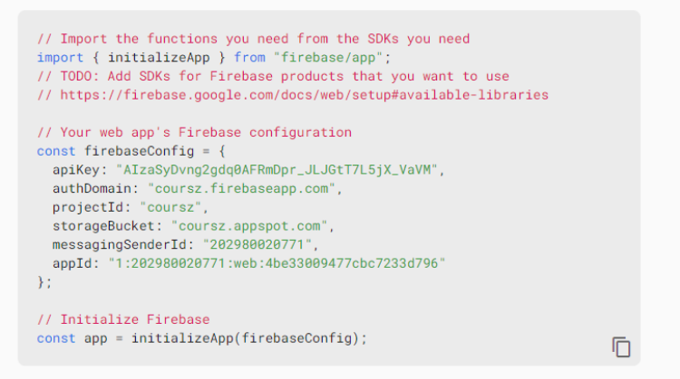

Une Single Page Application est une application web qui se charge une seule fois dans le navigateur et ne nécessite pas de rechargement de la page lors de l’interaction avec l’utilisateur. Les SPA sont généralement développées avec des frameworks JavaScript modernes tels que React, Angular ou Vue.js. Elles offrent une expérience utilisateur fluide et rapide en évitant les interruptions dues aux rechargements de page.
Les particularités d’une SPA présentent des défis spécifiques pour l’authentification, tels que la gestion de l’état de l’authentification côté client, la sécurisation des échanges de données et la gestion des tokens d’authentification.
L’authentification est essentielle dans une SPA pour plusieurs raisons. Elle permet d’identifier et d’authentifier les utilisateurs afin de leur donner accès aux fonctionnalités appropriées. L’authentification garantit également la sécurité des données en contrôlant les autorisations d’accès. Elle permet de différencier les utilisateurs et de personnaliser l’expérience utilisateur en fonction de leur profil.
L’authentification dans une SPA soulève des enjeux de sécurité importants. Les attaquants peuvent tenter de compromettre le système d’authentification en exploitant des vulnérabilités. La gestion des tokens d’authentification est un aspect critique de la sécurité dans une SPA. Les tokens sont utilisés pour authentifier les utilisateurs et doivent être sécurisés contre les interceptions et les utilisations frauduleuses.
Un token est une chaîne de caractères générée par le serveur d’authentification et utilisée pour représenter l’identité et les droits d’un utilisateur authentifié. Il s’agit d’un jeton d’authentification qui permet de valider l’accès aux ressources protégées.
Dans le contexte de l’authentification dans une SPA, les tokens jouent un rôle crucial. Plutôt que de stocker les informations d’authentification côté serveur, les tokens sont utilisés pour vérifier l’identité de l’utilisateur côté client.
Il existe deux types principaux de tokens utilisés dans l’authentification : les tokens opaques et les tokens autosuffisants.
Les tokens opaques sont des chaînes de caractères qui sont stockées côté serveur et sont utilisées pour identifier et valider l’utilisateur lors des requêtes. Le serveur vérifie la validité du token en interrogeant une base de données ou un système de gestion des sessions.
Les tokens autosuffisants, tels que les JSON Web Tokens (JWT), contiennent toutes les informations nécessaires à leur validation. Ils sont généralement signés numériquement pour garantir leur intégrité. Les tokens JWT sont autocontenus, ce qui signifie qu’ils contiennent à la fois les informations d’identification et les informations d’autorisation, évitant ainsi la nécessité de consulter une base de données ou un système de gestion des sessions à chaque demande d’accès aux ressources.
Le JWT est l’un des formats de token les plus couramment utilisés dans les SPA. Il offre plusieurs avantages :
Le JWT est un format de token ouvert et standardisé qui permet de représenter des informations sous forme de chaînes de caractères sécurisées. Il est basé sur le format JSON et est largement utilisé dans les applications web et les API.
Un JWT se compose de trois parties distinctes : l’en-tête (header), la charge utile (payload) et la signature. Le header contient des informations sur le type de token et l’algorithme de cryptographie utilisé pour signer le token. La charge utile contient les revendications qui sont des assertions sur une entité et des métadonnées supplémentaires. Les revendications peuvent être de trois types : revendications prédéfinies, revendications publiques et revendications privées.
La signature est une chaîne de caractères générée en utilisant la clé secrète du serveur. Elle est créée en combinant l’en-tête encodé en Base64, la charge utile encodée en Base64 et la clé secrète, puis en appliquant un algorithme de hachage.
Lorsqu’il s’agit de stocker des tokens dans une application SPA avec React, il existe plusieurs options de stockage local disponibles. Chacune de ces options présente des caractéristiques spécifiques en termes de sécurité, de durée de vie des données et d’accessibilité.
Le session storage est un mécanisme de stockage local qui permet de stocker des données de session côté client. Les données stockées dans le session storage sont persistantes pendant la durée de la session de l’utilisateur. Cela signifie que les données sont conservées tant que la fenêtre ou l’onglet du navigateur est ouvert. Une fois la session terminée, les données du session storage sont effacées.
Le session storage est généralement utilisé pour stocker des informations temporaires et non sensibles. Cependant, il n’est pas recommandé de stocker des tokens d’authentification sensibles dans le session storage.
Le local storage est un autre mécanisme de stockage local qui permet de stocker des données de manière persistante côté client. Contrairement au session storage, les données stockées dans le local storage ne sont pas effacées lorsque la session se termine. Elles restent disponibles même après la fermeture du navigateur et la réouverture ultérieure de l’application.
Il peut être utilisé pour stocker des informations telles que des préférences utilisateur ou des données de configuration. Cependant, il présente également des risques de sécurité similaires au session storage en ce qui concerne le stockage de tokens d’authentification sensibles.
Les cookies sont des petits fichiers de texte stockés par le navigateur sur l’ordinateur de l’utilisateur. Ils sont largement utilisés pour stocker des informations d’authentification et de session. Les cookies sont associés à un nom de domaine spécifique et sont automatiquement inclus dans les requêtes HTTP envoyées au serveur.
Les cookies peuvent être configurés pour avoir une durée de vie spécifique, ce qui leur permet de rester persistants même après la fermeture du navigateur. De plus, les cookies peuvent être sécurisés en utilisant des directives telles que le marquage comme « httpOnly » pour empêcher l’accès depuis des scripts côté client.
Firebase est une plateforme de développement d’applications mobiles et web proposée par Google. Elle offre une gamme de services, y compris l’authentification des utilisateurs, le stockage de données en temps réel et les fonctionnalités de cloud computing.
Dans la mise en pratique de ce cours, nous allons utiliser react-firebase-hooks afin de gérer l’authentification de l’utilisateur. Firebase va s’occuper de générer un token d’authentification pour l’utilisateur authentifié. Ce token sera ensuite stocké dans un cookie sécurisé par défaut appelé __session. Ce cookie est automatiquement géré par Firebase et est envoyé avec chaque requête au serveur Firebase pour authentifier l’utilisateur.
Il est nécessaire de posséder un compte Google afin d’utiliser Firebase, après s’être assuré être connecté à Google, nous pouvons accéder à firebase à l’URL suivant :
FirebaseNous pouvons, depuis la barre de navigation, accéder à la section Products, puis Build afin d’accéder au panel de création de projets de Firebase :
Appuyez sur le bouton « Créer un projet », « Get Started » ou « Ajouter un projet », selon si vous avez déjà conçu un projet Firebase ou non, puis il vous est demandé de le nommer. Ensuite, vous avez la possibilité d’activer Google analytics, nous ne nous en servirons pas dans ce cours. Après quelques instants, votre projet firebase est initié et prêt à être configuré.
Firebase Authentication est un service fourni par Firebase qui permet de gérer l’authentification des utilisateurs. Il offre des fonctionnalités telles que l’inscription, la connexion et la déconnexion des utilisateurs. Vous pouvez utiliser Firebase Authentication pour créer des comptes d’utilisateurs et générer des tokens d’authentification. Lorsqu’un utilisateur se connecte avec succès, Firebase génère un token d’authentification pour cet utilisateur.
Après la création du projet sur firebase, nous sommes redirigés vers la console du projet. Afin d’activer Firebase Authentication, nous pouvons cliquer sur la section Authentication :
Nous sommes alors redirigés vers la page dédiée à ce service, nous pouvons cliquer sur le bouton Commencer afin de l’activer dans notre projet. Dans la section « Fournisseurs de connexion », nous allons maintenant activer la fonctionnalité qui permettra aux utilisateurs de s’authentifier via l’utilisation d’un mail et d’un mot de passe :
Enfin nous pouvons activer cette fonctionnalité avant d’enregistrer nos modifications.
Firebase offre deux services de stockage de données en temps réel : Firebase Realtime Database et Firestore. Ces services permettent de stocker les données des utilisateurs, y compris les tokens d’authentification. Vous pouvez utiliser Firebase Realtime Database ou Firestore pour créer une collection ou un nœud dédié dans votre base de données où vous pouvez stocker les tokens d’authentification associés à chaque utilisateur. Cela permet d’avoir un référentiel centralisé pour gérer les tokens et de les révoquer si nécessaire.
Nous pouvons retourner sur la vue d’ensemble de la console afin d’ajouter notre application à Firebase.
Nous cliquons sur le bouton qui contient une balise afin d’ajouter une application web à notre projet.
Après avoir saisi le nom de l’application, nous pouvons récupérer le code de configuration fourni par firebase :
